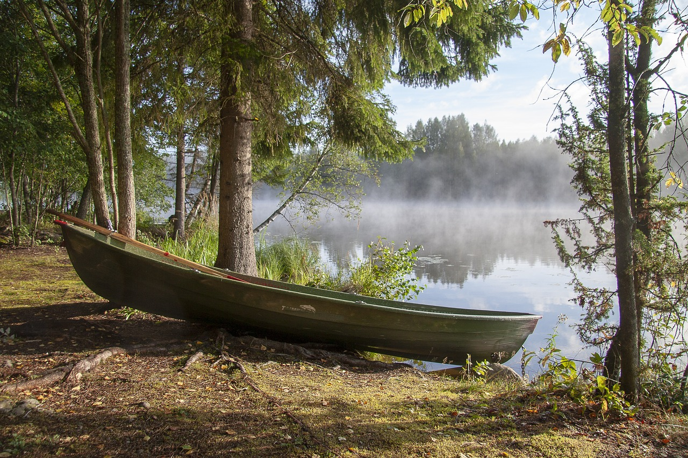
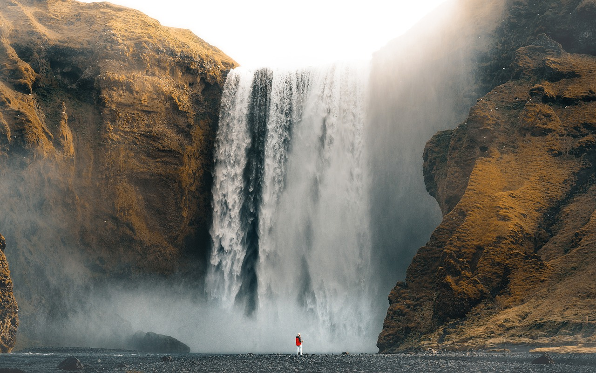

Hoje, decidi explorar a beleza dos lagos locais em um passeio de barco. Com o sol brilhando e a brisa fresca, deslizar pela água foi uma experiência revigorante. As margens estavam repletas de vegetação exuberante e pássaros cantando, criando um cenário perfeito. O som suave das ondas e o balanço do barco proporcionaram um momento de paz que me conectou com a natureza. Cada nova vista trouxe um sorriso ao meu rosto, e eu mal podia esperar para voltar e repetir a experiência.
Por: Tal pessoa
Ler mais sobre

Ao chegar à cachoeira, fiquei maravilhado com a força e a beleza da água caindo em cascata. O som do fluxo intenso e o spray fresco no ar criaram uma atmosfera mágica. A trilha até lá foi cercada por árvores altas e flores coloridas, tornando a jornada tão especial quanto o destino. Ao me aproximar da base da cachoeira, a vista se transformou em um espetáculo natural impressionante. Senti a adrenalina ao me refrescar nas águas cristalinas, um momento perfeito para apreciar a grandeza da natureza.
Por: Tal pessoa
Ler mais
A fotografia sempre foi uma paixão minha, e hoje tive a oportunidade de capturar momentos inesquecíveis. Saí com minha câmera para registrar a beleza do dia, desde a luz suave da manhã até o pôr do sol deslumbrante. Cada clique trazia uma nova história: o riso de uma criança brincando, a serenidade de um lago ou a energia vibrante de uma cidade. Ao revisitar as fotos mais tarde, percebi que cada imagem não é apenas uma representação visual, mas uma janela para as emoções e experiências que vivi. A arte de fotografar transforma momentos fugazes em memórias eternas.
Por: Tal pessoa
Ler mais